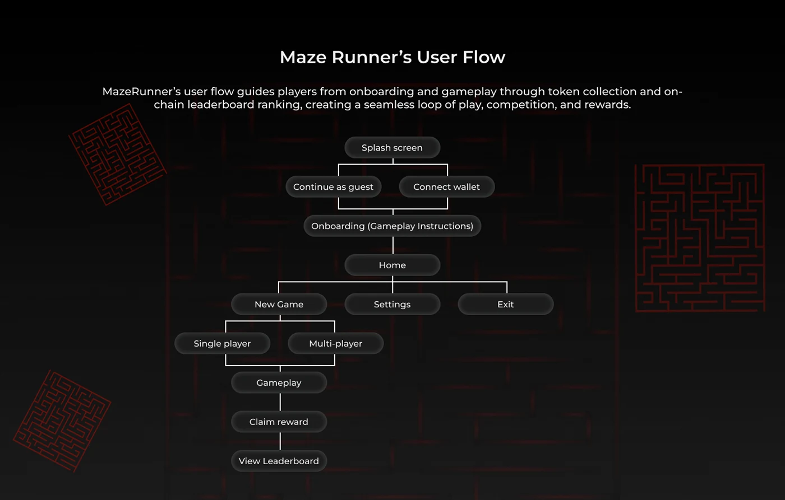
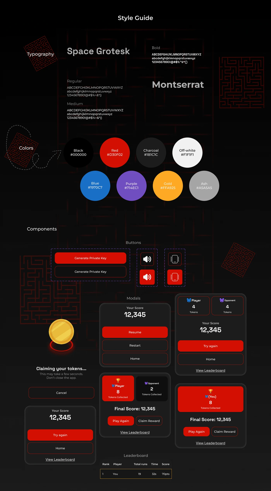
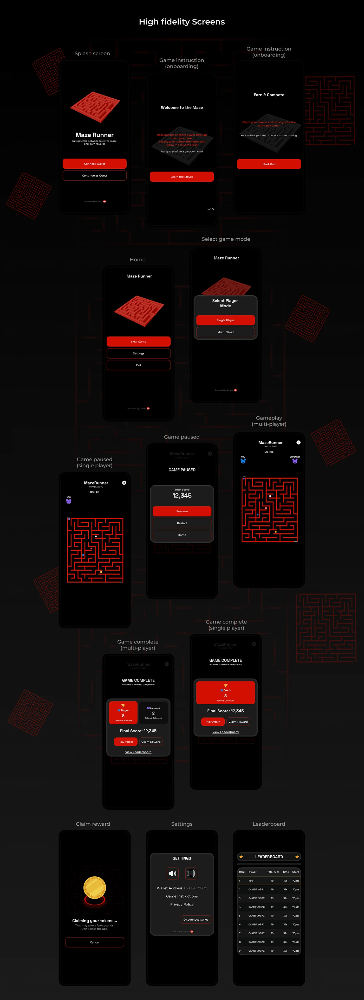

More work · Web3 · Gaming
Maze Runner
A Web3 game DApp design
RoleProduct Designer
FocusFast-paced arcade gameplay with blockchain transparency

About Maze Runner
MazeRunner is a fast-paced, arcade-style game built on the blockchain, designed to blend the thrill of real-time competition with transparent, on-chain gameplay.
Players race through dynamically generated mazes, collect digital tokens, and compete for top spots on a global leaderboard.
Whether you're a casual gamer or a competitive player, MazeRunner combines speed, strategy, and blockchain-powered rewards in a visually striking arcade experience.
Target audience
MazeRunner's target audience is competitive arcade and casual gamers aged 16 to 35 who enjoy fast-paced, skill-based challenges, as well as Web3 enthusiasts interested in collecting digital tokens and competing on transparent, blockchain-powered leaderboards. They value speed, strategy, and social competition, whether playing solo or with friends.
The problem Maze Runner solves
MazeRunner solves the problem of lackluster, unengaging competitive experiences in arcade and blockchain gaming by combining fast-paced, skill-based gameplay with transparent, on-chain leaderboards. It gives players real-time, fair competition, rewarding both speed and strategy while making achievements and token rewards verifiable and meaningful.
User flow
A seamless loop of play, competition and rewards
MazeRunner's user flow guides players from onboarding and gameplay through token collection and on-chain leaderboard ranking.

Style guide
Space Grotesk and Montserrat

High fidelity screens
From splash screen to leaderboard

Conclusion
MazeRunner demonstrates how fast-paced arcade gameplay can be combined with blockchain transparency to create a fun, competitive, and fair gaming experience.
By uniting intuitive UI, real-time leaderboards, and token-based rewards, the project lays a strong foundation for scalable, multiplayer Web3 gaming.
Back to the rest
More work →Have a product that needs figuring out?
Let's talk.
© Lulu 2026 · Designed in Jos, Nigeria.